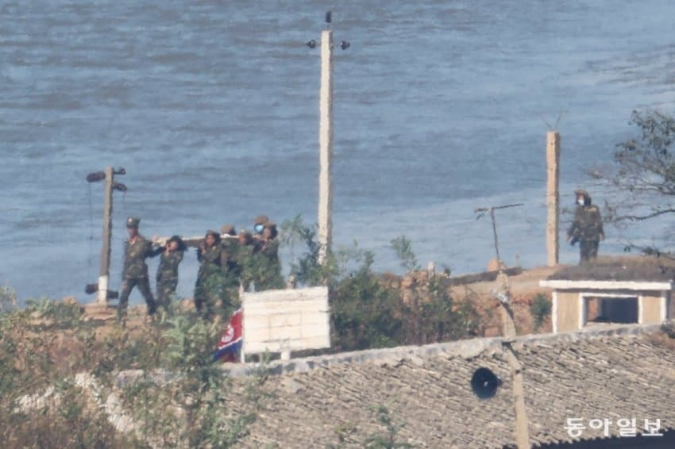

가차없이 전방에서 야가다

가차없이 전방에서 야가다
중국 출장시 중공업회사에서 여자들이 중장비(크레인, 지게차같은)다루는거 많이봤음 공산권 국가들이 인권이 하향 평준화돠면서 여성인권이 남성인권이랑 비슷하게 취급되긴 헌고 같아
ㄹㅇ 한국도 성평등 좀 ㅋㅋ
모든 성별의 인권이 씹창나면 진정한 평등이긴 함 ㅋㅋㅋ
야그러지마라 북한여군 그냥 성노예더만
여자도 군대가는거만 평등하지 현실은 여잔 그 밑에 취급받지.. 저쪽은..
무댓 개드립 ㄷㄷ
할건 해야제
못먹고사는 년들도 가능한데, 왜 잘먹고 사는 년들은 불가능하냐고 애미뒤진 병무청 대법원년들아 ㅋㅋㅋ
못먹고 살아서 가능한듯 잘먹고 잘 살수록
너무 오냐오냐 키워서 등따시고 배불러서
저런거 못하는듯 특히 여자들이면 뭐 두말 할 필요가 있겠음 ?
여자들 징병뿐만이 아니고
우리나라는 이제 병사들 파병 절대 못보내잖아
월남전 시절이나 현재 북한처럼 병사 대거 파병?
절대 영원히 불가
재내는 노동착취에 +성착취 까지 당한다고 배웠는데.. 완전 디스토피아구마잉
검색해보니 "만연한 성폭력과 성상납 강요"
어...
낮에 저렇게 굴려야지 밤에 얌전하지
ㅋㅋㅋㅋㅋㅋㅋ
(북)한남 다 죽어라 이기
남자 여자끼리 싸우지 말자 얘들아 세상은 아름다우니 싸우지말자구~~
여자는 원래 이렇게 한단 말입니다
저기는 여자가 꼴등 시민이라고 함
남편이 부인 때려도 폭행 신고 못 한다고 함 ㅋㅋㅋㅋ
어떤 나라에선 여자는 못하는 거라고 했는데?
리버스 조선ㄷㄷ
ㅋㅋㅋㅋㅋㅋㅋㅋ
원조 가부장 맛이 어때
저게 걸스캔두애니띵(쿠데타 제외)이구나
악으로 깡으로 버텨라 ㅋㅋㅋ
저기는 강간이 일상인 곳이라서 진짜 힘들어..
압록강 부대 VS 임진강 휴전선 철책 부대
어느쪽으로 배치받는걸 선호할까?
압록강 근처 부대 - 최후방, 추움
휴전선 부대 - 최전방, 그나마 덜 추움
야가다 ㄷㄷㄷㄷㄷㄷㄷㄷㄷ
당장 일본봐도 공사 현장에서 중장비 다루는 여직원들 많더라.
신기했어
오히려 미국에 가도 중장비 다루고 힘든일 하는 여자들 많고 일본에 가도 노가다판에 중장비 덤프 화물하는 여자들 많았음. 북한은 여자들 군대가고 중국도 힘쓰는일 하는 공사판에 도장, 조적, 시스템 하는 여자들 많았음. 한국이 유독 좀 여자들 저런 험한일 안시키려 하는 편
저거 나무가 아니라 공구리 전봇대 같은데? ㄷㄷㄷㄷ
저런거보면 통일 후 9999% 문화적 진통 온다..
원조 가부장 농밀한 맛에 꼴.페미년들도 한.남이 선녀였음을 깨닫게 될 건 당연지사고..
동남아, 중앙아시아 등 후진국 남성들보다 못한게 쟤들 여성 인권 의식일 듯..
가령 클럽 거리 남조선 애미나이들 보고 한국 쌍팔년도마냥 " 계집이 야하게 입어서 꼬리친 거 아니냐! "
하는 강.간범도 나올게 뻔함.
쟤들 썰 들어보니 남자가 데이트(or 섹스) 하자는거 거절하면 몇대 때려서라도 여자가 말 듣게 한다던데?
저런애들이랑 어떻게 통일을 하냐 그냥 중국 막아주는 완충 억제기로 망하지나 말아줘
이야 북한 선진국이네 ㅋㅋ
진정한 성평등이 저기있구마잉